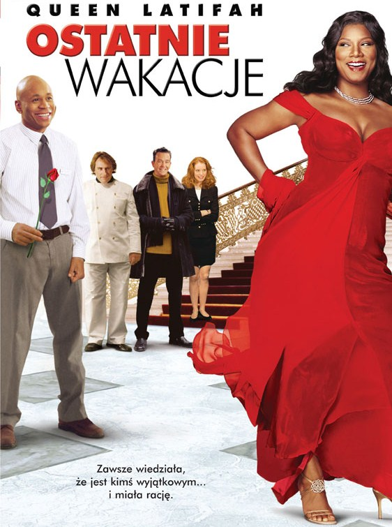
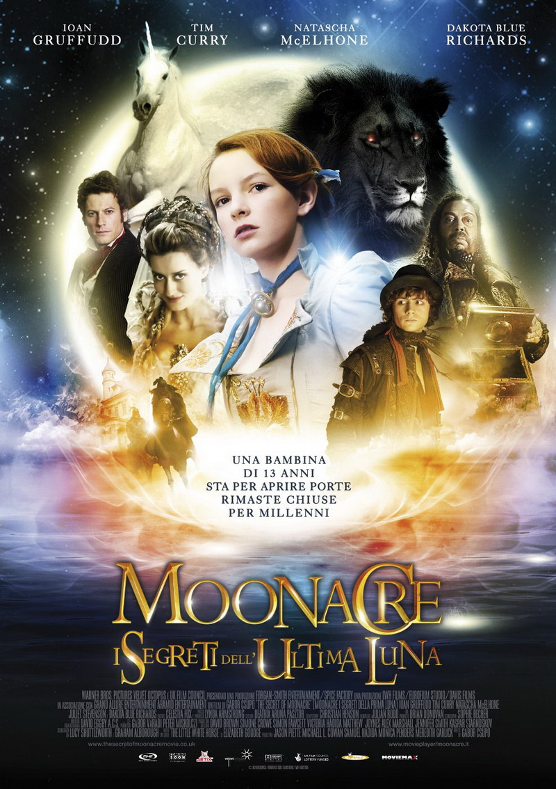

Название: Ловкие руки
Ориг. название: Shade
Жанр: триллер, криминал Год: 2003 Страна: США
Режиссёр: Дэмьен Ньюман Сценарист: -
В ролях: Сильвестр Сталлоне, Мелани Гриффит, Габриэль Бирн, Тэнди Ньютон, Хол Холбрук
Описание
Сорвать крупный куш в одиночку почти невозможно. Для этого нужна многоходовая афера. Вот и сейчас кое-кто задумал невероятное: большую игру против легендарного Стивенса! Итак, гений махинаций Чарли Миллер, карточный виртуоз Вернон и шулер Ларри Дженнингс встретились не случайно. Для каждого из них обман — и средство и угроза. Ведь в преступном мире цена жизни ничтожно мала по сравнению с суммами чьих-то потерь!

Название: Последний отпуск
Ориг. название: Last Holiday
Жанр: Драма Комедия Приключения Год: 2006 Страна: США
Джорджия Берд работает скромным продавцом кухонной утвари. С ножами и кастрюлями она обращается, как заправский повар. Однажды, неожиданно узнав о том, что дни ее сочтены, она решает реализовать свою давнюю мечту и отправляется на фешенебельный европейский курорт, где ее по ошибке принимают за богатую эксцентричную особу. Понимая, что ей нечего терять, Джорджия начинает себя вести чрезвычайно раскованно и вызывающе…

Название: Тайна Мунакра
Ориг. название: The Secret of Moonacre
Жанр: Фэнтези, мелодрама, приключения, семейный Год: 2008 Страна: Венгрия / Великобритания / Франция, Forgan-Smith Entertainment
Режиссёр: Габор Чупо / Gabor Csupo Сценарист: -
В ролях: Йоан Гриффит, Дакота Блю Ричардс, Тим Карри, Наташа МакЭлхоун, Джульет Стивенсон, Август Прю, Энди Линден, Майкл Веббер, Джордж Мендел
Описание
Когда отец 13-летней Марии умирает, оставив её бездомной сиротой, ей приходится оставить Лондон и переехать к сэру Бенджамину, эксцентричному дядюшке, о котором она никогда ранее не слышала, в его загадочное поместье «Лунная Долина». Мария оказывается в мире, разделённом древней враждой с тёмным родом де Нуар. Она — последняя Лунная Принцесса — должна преодолеть семейную гордость и раскрыть тайны прошлого до того, как Луна взойдёт пятитысячный раз и Лунную долину поглотит море.